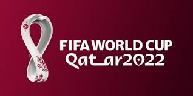
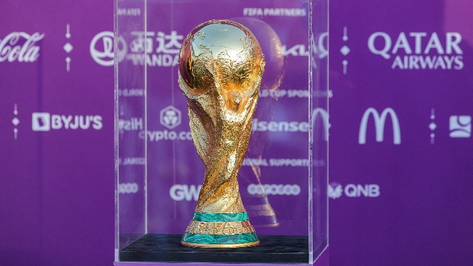
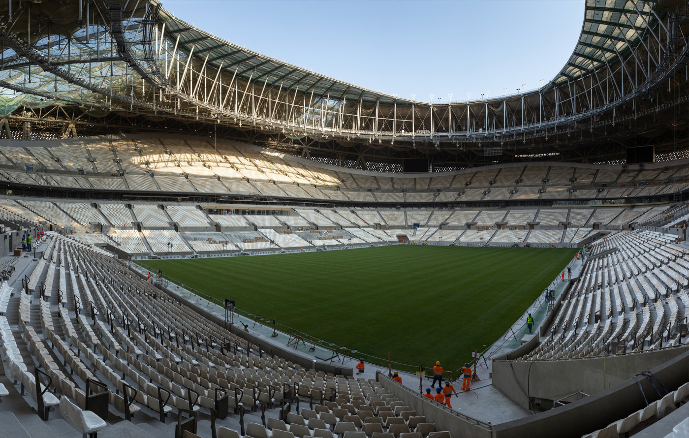
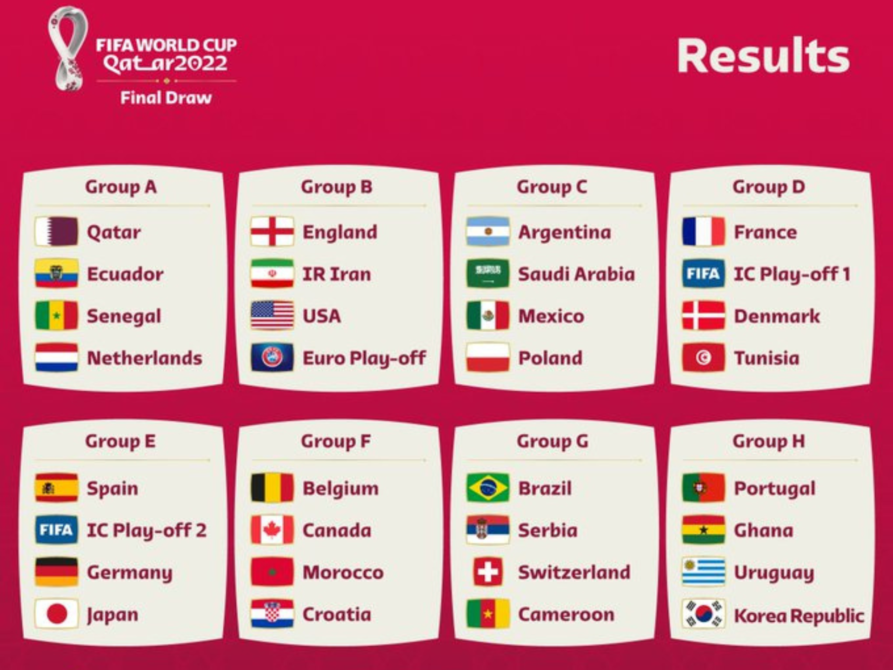
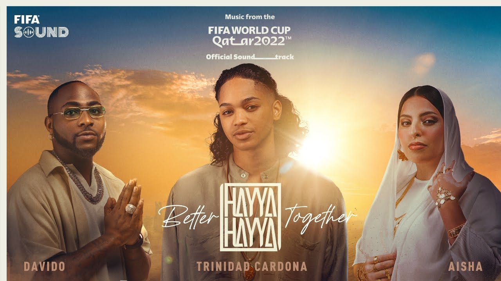

Seleccion Campeona del Mundo

Poster oficial del Mundial Qatar 2022

Trofeo del Mundial Qatar 2022

Album de cromos del Mundial Qatar 2022

Balon oficial del Mundial Qatar 2022


Seleccion Campeona del Mundo
Poster oficial del Mundial Qatar 2022

Trofeo del Mundial Qatar 2022

Album de cromos del Mundial Qatar 2022
Balon oficial del Mundial Qatar 2022
Participantes

Estadisticas del Mundial Qatar 2022
Estadios del Mundial Qatar 2022
Estadio Lusail

Estadio Al Bayt

Estadio 974

Estadio Ahmad bin Ali

Estadio Al Janoub

Estadio Al Thumama

Estadio Education City

Estadio Internacional Khalifa
Tercer puesto del Mundial Qatar 2022

Final del Mundial Qatar 2022

Canción oficial del Mundial Qatar 2022

Mascota del Mundial Qatar 2022

Premios de Qatar 2022